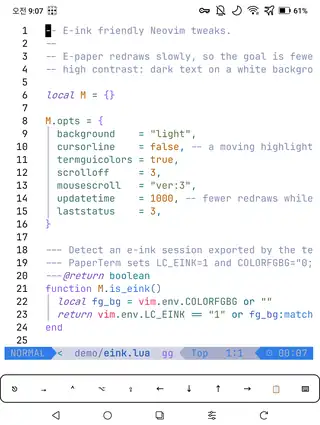
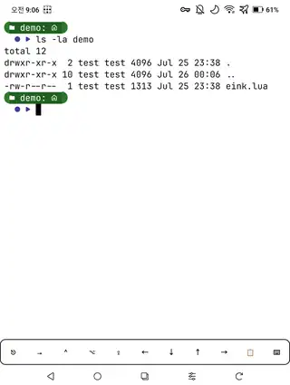

PaperTerm
شبكات وملفات
PaperTerm is an SSH terminal built for e-paper devices such as the Onyx Boox range, where screens redraw slowly and leave ghosting behind. It pairs the Termux terminal engine with a pure-Java SSH client, and adds the details that make a terminal usable on e-ink. It is a pure SSH client: there is no
✓ ترخيص مفتوح (GPL-3.0-or-later) · آخر تحديث: 2026-08-05
0.1.2الإصدار
15.3 MBالحجم
GPL-3.0-or-laterالرخصة
Open in Kanzتحميل APK (15.3 MB)
Download APK
SHA-256: 6f40ce89a3c7e4f0a292204d29285072fa946841ab253ddcdfefa50ed74f7cbd


امسح الكود لفتح صفحة التطبيق
Scan to open this app page
لو كنز مش متثبت عندك: نزّل متجر كنز.
Not installed? Get the Kanz store.